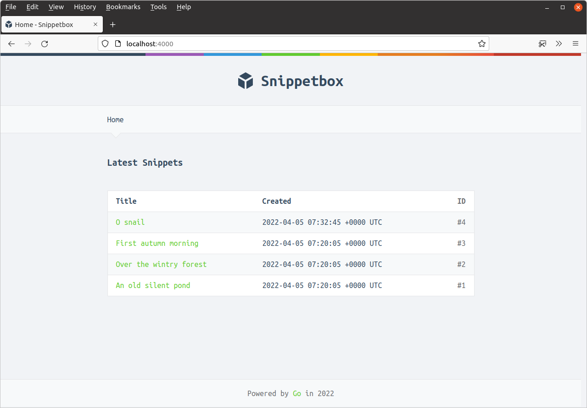

دادههای پویای مشترک
در برخی از برنامههای وب ممکن است دادههای پویای مشترکی وجود داشته باشد که میخواهید در بیش از یک — یا حتی همه — صفحات وب قرار دهید. به عنوان مثال، ممکن است بخواهید نام و تصویر پروفایل کاربر فعلی یا یک توکن CSRF را در تمام صفحات دارای فرم قرار دهید.
در مورد ما، بیایید با چیزی ساده شروع کنیم و بگوییم که میخواهیم سال جاری را در فوتر هر صفحه قرار دهیم.
برای انجام این کار، ابتدا یک فیلد جدید CurrentYear به ساختار templateData اضافه میکنیم، به این صورت:
package main ... // Add a CurrentYear field to the templateData struct. type templateData struct { CurrentYear int Snippet models.Snippet Snippets []models.Snippet } ...
مرحله بعدی، افزودن یک متد کمکی newTemplateData() به برنامه ما است که یک ساختار templateData مقداردهی شده با سال جاری را برمیگرداند.
نمایش میدهم:
package main import ( "bytes" "fmt" "net/http" "time" // New import ) ... // Create an newTemplateData() helper, which returns a templateData struct // initialized with the current year. Note that we're not using the *http.Request // parameter here at the moment, but we will do later in the book. func (app *application) newTemplateData(r *http.Request) templateData { return templateData{ CurrentYear: time.Now().Year(), } } ...
سپس بیایید handlerهای home و snippetView خود را برای استفاده از متد کمکی newTemplateData() بهروزرسانی کنیم، به این صورت:
package main ... func (app *application) home(w http.ResponseWriter, r *http.Request) { w.Header().Add("Server", "Go") snippets, err := app.snippets.Latest() if err != nil { app.serverError(w, r, err) return } // Call the newTemplateData() helper to get a templateData struct containing // the 'default' data (which for now is just the current year), and add the // snippets slice to it. data := app.newTemplateData(r) data.Snippets = snippets // Pass the data to the render() helper as normal. app.render(w, r, http.StatusOK, "home.tmpl", data) } func (app *application) snippetView(w http.ResponseWriter, r *http.Request) { id, err := strconv.Atoi(r.PathValue("id")) if err != nil || id < 1 { http.NotFound(w, r) return } snippet, err := app.snippets.Get(id) if err != nil { if errors.Is(err, models.ErrNoRecord) { http.NotFound(w, r) } else { app.serverError(w, r, err) } return } // And do the same thing again here... data := app.newTemplateData(r) data.Snippet = snippet app.render(w, r, http.StatusOK, "view.tmpl", data) } ...
و سپس آخرین کاری که باید انجام دهیم، بهروزرسانی فایل ui/html/base.tmpl برای نمایش سال در فوتر است، به این صورت:
{{define "base"}}
<!doctype html>
<html lang='en'>
<head>
<meta charset='utf-8'>
<title>{{template "title" .}} - Snippetbox</title>
<link rel='stylesheet' href='/static/css/main.css'>
<link rel='shortcut icon' href='/static/img/favicon.ico' type='image/x-icon'>
<link rel='stylesheet' href='https://fonts.googleapis.com/css?family=Ubuntu+Mono:400,700'>
</head>
<body>
<header>
<h1><a href='/'>Snippetbox</a></h1>
</header>
{{template "nav" .}}
<main>
{{template "main" .}}
</main>
<footer>
<!-- Update the footer to include the current year -->
Powered by <a href='https://golang.org/'>Go</a> in {{.CurrentYear}}
</footer>
<script src='/static/js/main.js' type='text/javascript'></script>
</body>
</html>
{{end}}
اگر برنامه را مجدداً راهاندازی کنید و به صفحه اصلی در http://localhost:4000 مراجعه کنید، حالا باید سال جاری را در فوتر (footer) ببینید. مانند این:
